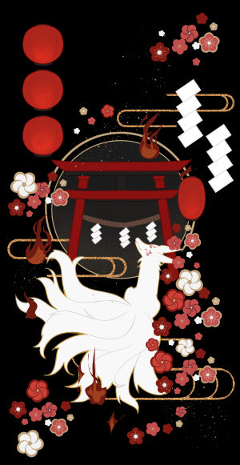
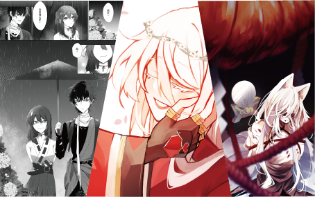
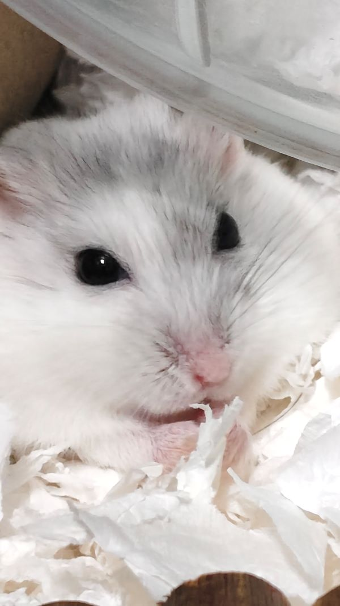

01 / CULTURE
賞析日本文化
喜歡日本文化與日系美學， 從生活風格、傳統文化到各種 視覺設計中尋找靈感。
日本文化 日系美學A LITTLE ABOUT ME
除了日常的創作，我也喜歡探索不同的文化、 角色故事與生活中的小事。 這些興趣帶給我靈感， 也慢慢成為自己風格的一部分。

01 / CULTURE
喜歡日本文化與日系美學， 從生活風格、傳統文化到各種 視覺設計中尋找靈感。
日本文化 日系美學02 / THEATRE
喜歡欣賞舞台劇與各類演出， 從演員的詮釋、劇情發展到舞台美術， 感受作品所傳達的情感與故事， 也從中累積不同的觀察與靈感。
舞台劇 演出賞析 舞台美術
03 / ART
喜歡用畫筆記錄腦海中的想法， 從插畫、漫畫到原創角色， 不斷嘗試新的表現方式。
插畫 漫畫
04 / DAILY LIFE
記錄八蛋的生活與各種有趣行為， 觀察牠的小習慣， 也收藏日常裡令人會心一笑的時刻。
倉鼠 生活紀錄「把日常裡的喜愛與靈感，慢慢收藏成自己的故事。」